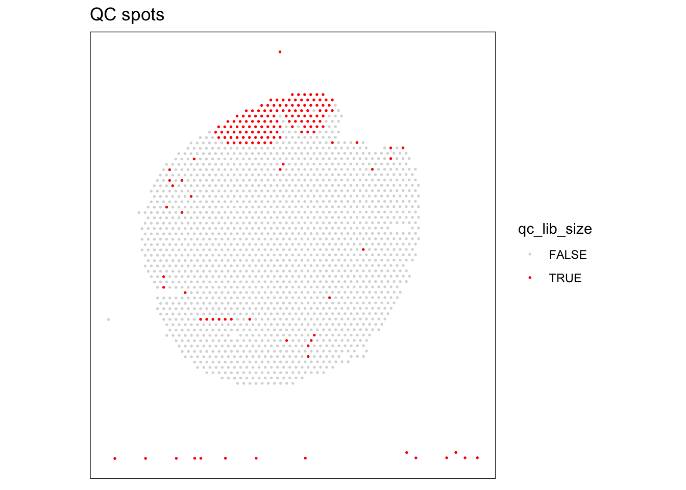
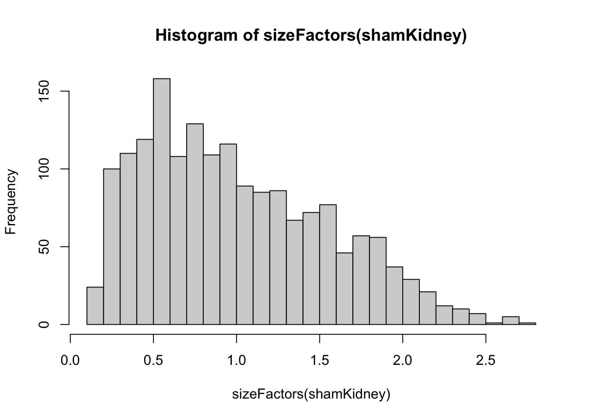
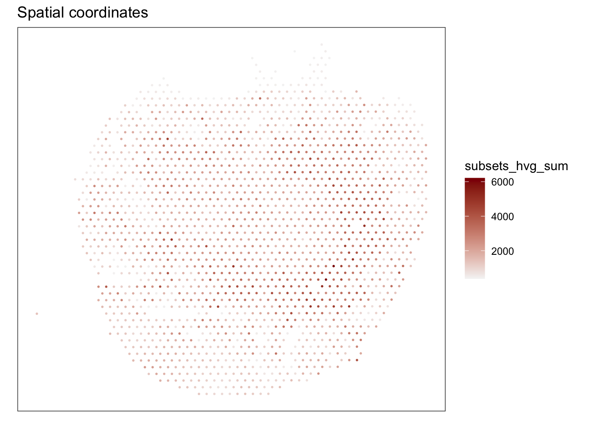
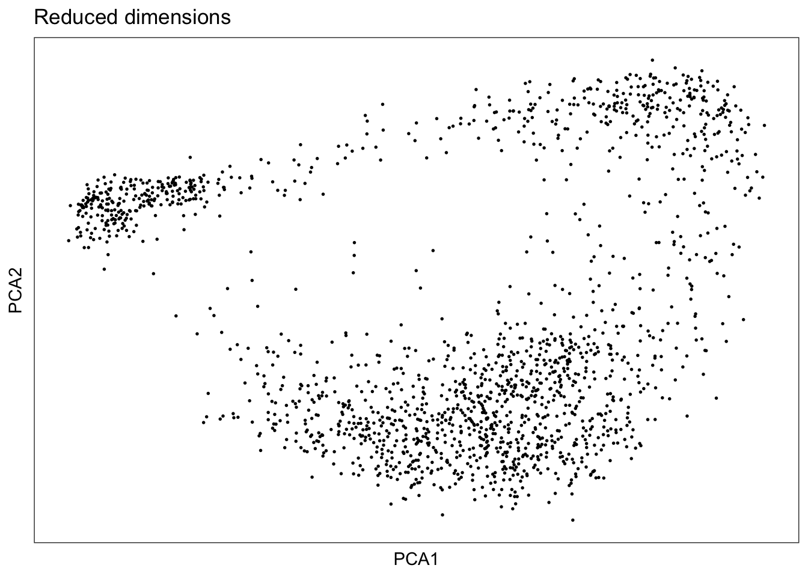
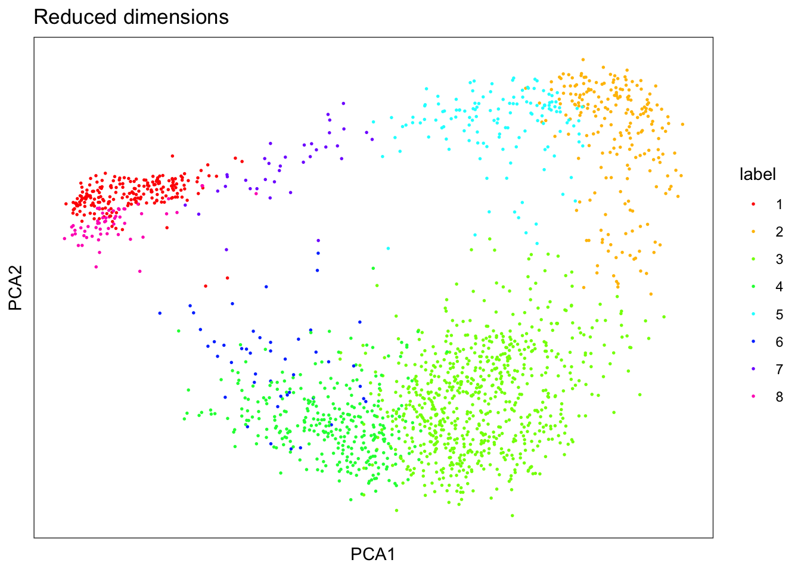
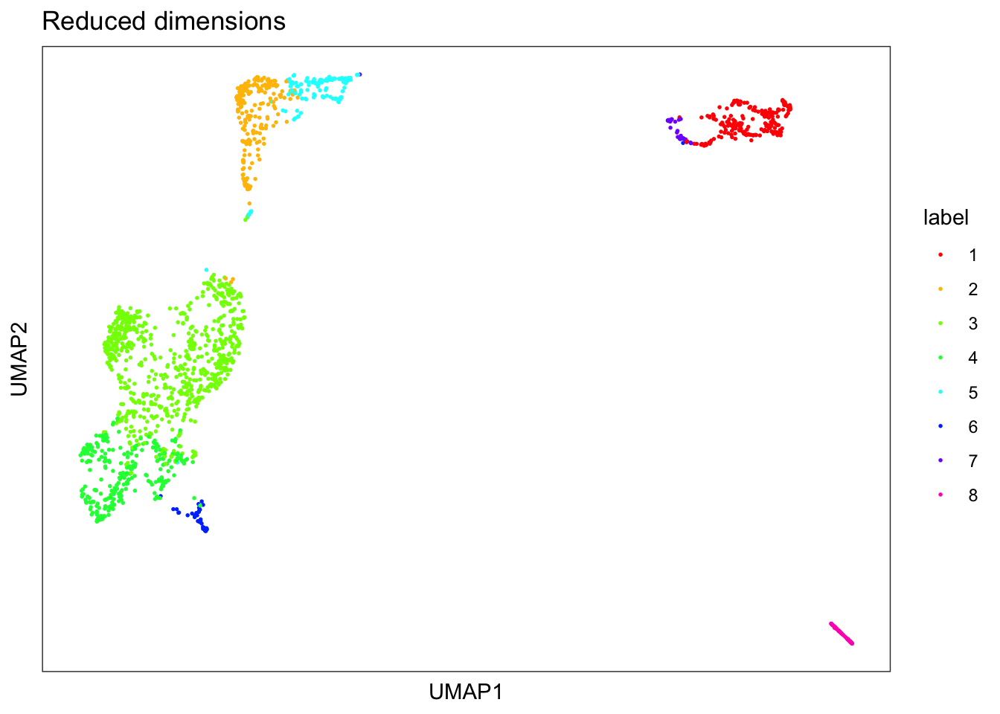
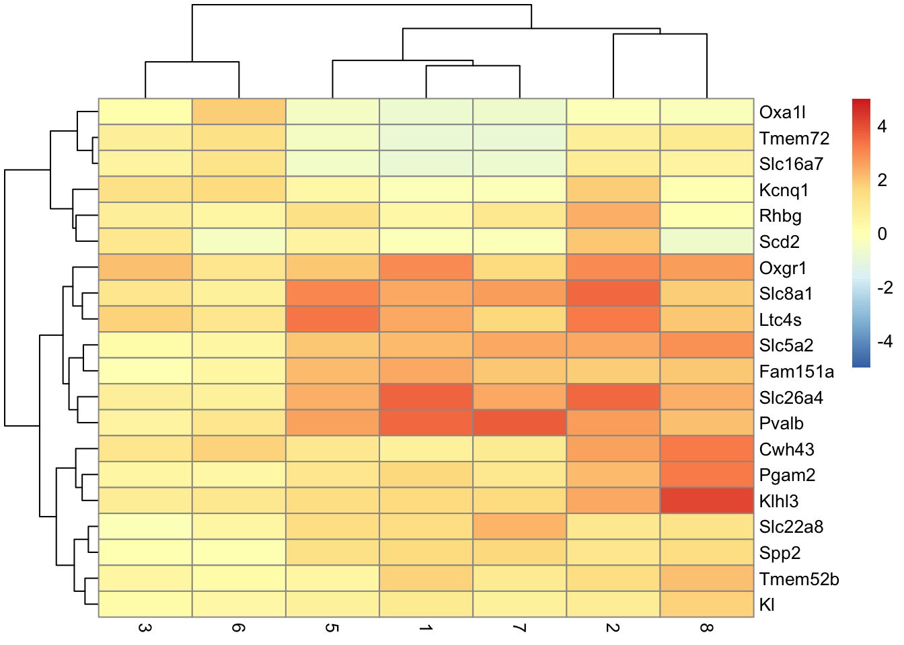
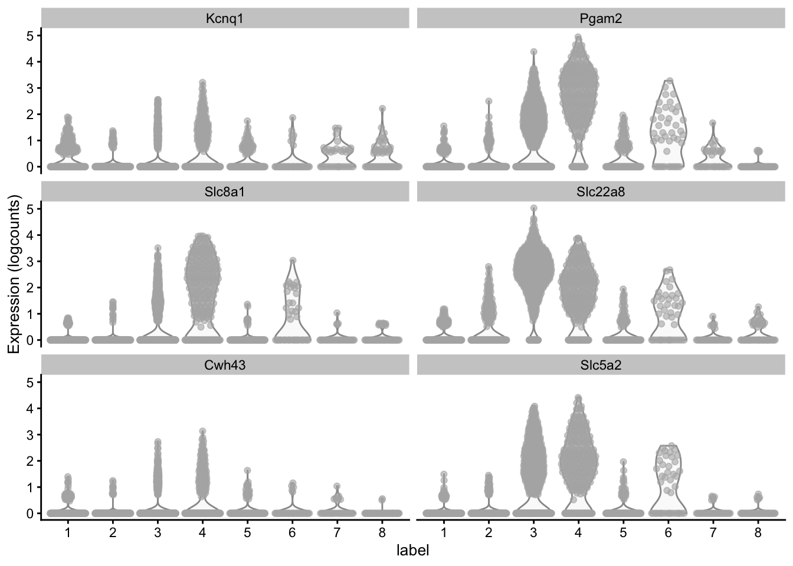

Spatial Transcriptomics analysis based on https://lmweber.org/OSTA-book/analysis-steps.html
For both practice data from github and from mice kidney paper.
Create a Spatial Experiment object.
dir <- file.path("~","Desktop","test")
sample1 <- file.path(dir, "sham", "outs")
shamKidney <- read10xVisium(sample1,
type = "sparse", data = "filtered",
images = "lowres", load = FALSE)Spatial Experiment objects can created with merged data from multiple tissue samples.
sample_ids2 <- c("2day", '12hour')
samples2 <- file.path(dir, sample_ids2, "outs")
samples_idsAll <- c('2day', '12hour', 'week', 'sham')
samplesAll <- file.path(dir, samples_idsAll, 'outs')
#Import visium data for mutiple samples
sham_6weekKidney <- read10xVisium(samples2, sample_ids2,
type = "sparse", data = "filtered",
images = "lowres", load = FALSE)
allKidneys <- read10xVisium(samplesAll, samples_idsAll,
type = "sparse", data = "filtered",
images = "lowres", load = FALSE)plotSpots(shamKidney)
plotSpots(sham_6weekKidney)
plotSpots(allKidneys)
plotVisium(allKidneys)
plotVisium(shamKidney)# add some values in 'colData' to annotate spots, also done by addPerCellQC function,
# colData(shamKidney)$sum <- colSums(counts(shamKidney))
#All spots already in tissue because using filtered data
shamKidney <- shamKidney[, colData(shamKidney)$in_tissue == TRUE]
#Get a list of gene names using rowData, symbol columns is the names
head(rowData(shamKidney)$symbol)## [1] "Xkr4" "Gm1992" "Gm19938" "Gm37381" "Rp1" "Sox17"#Used to look for specific genes, in this example searches for mitochondrial genes
is_mito <- grepl("(^MT-)|(^mt-)", rowData(shamKidney)$symbol)
table(is_mito)## is_mito
## FALSE TRUE
## 32272 13rowData(shamKidney)$symbol[is_mito]## [1] "mt-Nd1" "mt-Nd2" "mt-Co1" "mt-Co2" "mt-Atp8" "mt-Atp6" "mt-Co3"
## [8] "mt-Nd3" "mt-Nd4l" "mt-Nd4" "mt-Nd5" "mt-Nd6" "mt-Cytb"shamKidney <- addPerCellQC(shamKidney, subsets = list(mito=is_mito))
head(colData(shamKidney))## DataFrame with 6 rows and 10 columns
## in_tissue array_row array_col sample_id sum
## <logical> <integer> <integer> <character> <numeric>
## AAACCGGGTAGGTACC-1 TRUE 42 28 sample01 6619
## AAACCGTTCGTCCAGG-1 TRUE 52 42 sample01 3675
## AAACCTCATGAAGTTG-1 TRUE 37 19 sample01 11004
## AAACGAGACGGTTGAT-1 TRUE 35 79 sample01 15085
## AAACTGCTGGCTCCAA-1 TRUE 45 67 sample01 16255
## AAAGGCTACGGACCAT-1 TRUE 62 54 sample01 3515
## detected subsets_mito_sum subsets_mito_detected
## <integer> <numeric> <integer>
## AAACCGGGTAGGTACC-1 2373 853 11
## AAACCGTTCGTCCAGG-1 1616 457 11
## AAACCTCATGAAGTTG-1 3317 1462 11
## AAACGAGACGGTTGAT-1 4324 2153 12
## AAACTGCTGGCTCCAA-1 3989 3147 11
## AAAGGCTACGGACCAT-1 1611 523 11
## subsets_mito_percent total
## <numeric> <numeric>
## AAACCGGGTAGGTACC-1 12.8871 6619
## AAACCGTTCGTCCAGG-1 12.4354 3675
## AAACCTCATGAAGTTG-1 13.2861 11004
## AAACGAGACGGTTGAT-1 14.2725 15085
## AAACTGCTGGCTCCAA-1 19.3602 16255
## AAAGGCTACGGACCAT-1 14.8791 3515plotVisium(shamKidney, fill = "sum", trans = "log", highlight = "in_tissue")Thresholds can be used as QC to remove spots that don’t meet metrics. Including but not limited to:
Library size
Expressed genes
Proportion of gene specific reads (mitochondrial in this example)
Cells per spot (If available for dataset)
Appears to be a spike at low library sizes? An increased number of spots with low number of transcripts around 1000 which can be filtered out. Need to doublecheck the difference between UMIs and expressed genes.
hist(colData(shamKidney)$sum, breaks = 20) # Library Size, total sum of UMI counts per spot (included in sum column)hist(colData(shamKidney)$detected, breaks = 20) # Number of expressed genes per spot (detected column)hist(colData(shamKidney)$subsets_mito_percent, breaks = 20) # Proportion of mitochondrial genes per spot# select QC threshold for library size
qc_lib_size <- colData(shamKidney)$sum < 1500
table(qc_lib_size)## qc_lib_size
## FALSE TRUE
## 1731 169colData(shamKidney)$qc_lib_size <- qc_lib_size
# check spatial pattern of discarded spots
plotQC(shamKidney, type = "spots",
discard = "qc_lib_size")
Remove and filter any low quality spots. Only based on UMIs
# combined set of discarded spots
discard <- qc_lib_size
colData(shamKidney)$discard <- discard
# filter low-quality spots
shamKidney <- shamKidney[, !colData(shamKidney)$discard]Log based normalization can be performed to scale data approximately and create clusters.
set.seed(123) #quick clustering for pool-based size factors
qclus <- quickCluster(shamKidney)
# table(qclus)
shamKidney <- computeSumFactors(shamKidney, cluster = qclus)
summary(sizeFactors(shamKidney))## Min. 1st Qu. Median Mean 3rd Qu. Max.
## 0.1591 0.5492 0.9118 1.0000 1.3973 2.7630hist(sizeFactors(shamKidney), breaks = 20)
shamKidney <- logNormCounts(shamKidney)
assayNames(shamKidney)## [1] "counts" "logcounts"Feature selection based on highly variable genes (HVG) and spatially variable genes (SVG). Should mitochondrial genes be removed? Are they are likely highly expressed and/or are they of biological interest? SVG selection based on SPARK-X package, HVG based on scran package
# shamKidney <- shamKidney[!is_mito, ]
# dim(shamKidney)
deCells <- modelGeneVar(shamKidney)
fit <- metadata(deCells)
plot(fit$mean, fit$var,
xlab = "mean of log-expression", ylab = "variance of log-expression")
curve(fit$trend(x), col = "dodgerblue", add = TRUE, lwd = 2)top_hvgs <- getTopHVGs(deCells, prop = 0.1) #prop defines how many HVGS are wanted, 0.1 returns top 10% of genes
length(top_hvgs)## [1] 446plot shows the total UMIs expressed in spots with differentially expressed cells. This is the absolute numver of observed transcripts per spot in spots expressing genes in the HVG list. (Based on 10x definition of UMI, needs to be doublechecked)
Integration of highly variable genes and spatially variable genes can be combines to further identify biologically relevant information not cpatured by HVGs alone. Example in Li et al. 2021 combines principal components of based on HVGs and SVGs in downstreams analysis.
#Delete columns added in first addPerCellQC function to prevent duplicate columns
shamKidney$sum <- shamKidney$detected <- shamKidney$total <- NULL
#careful running multiple times, adds duplicate columns and breaks code.
shamKidney <- addPerCellQC(shamKidney, subsets = list(hvg = top_hvgs))
# head(colData(shamKidney))
plotSpots(shamKidney, annotate = "subsets_hvg_sum", palette = c("whitesmoke", "red4"))
PCA and UMAP can be easily produced.
How do PCA/UMAP plots compare to the plots prpduced by loupe browser for 6week sample? They are different maybe because the number of clusters differ. Should they all be the same? How do they differ compared to seurat clustering?
set.seed(123)
shamKidney <- runPCA(shamKidney, subset_row = top_hvgs)
shamKidney <- runUMAP(shamKidney, dimred = "PCA")
# dim(reducedDim(spe, "PCA"))
colnames(reducedDim(shamKidney, "UMAP")) <- paste0("UMAP", 1:2)
plotDimRed(shamKidney, type = "PCA")
plotDimRed(shamKidney, type = "UMAP")Produces clusters of HVGs using graph-based clustering based on the Walktrap method. Applies to top 50 PCs?
Change K values to change the number of clusters. Are less clusters better or are more clusters better for analysis?
set.seed(123)
k = 20
g <- buildSNNGraph(shamKidney, k = k, use.dimred = "PCA") #Graph based clustering
g_walk <- igraph::cluster_walktrap(g)
clus <- g_walk$membership
table(clus)## clus
## 1 2 3 4 5 6 7 8
## 208 216 727 306 136 45 36 57colLabels(shamKidney) <- factor(clus) #Store cluster labels in column 'label' in colData
plotSpots(shamKidney, annotate = "label",
palette = rainbow(8))plotVisium(shamKidney, fill = "label", trans = "log", highlight = "in_tissue", palette = rainbow(8))plotDimRed(shamKidney, type = "PCA",
annotate = "label", palette = rainbow(8))
plotDimRed(shamKidney, type = "UMAP",
annotate = "label", palette = rainbow(8))
Code to identify potential marker genes, can also be done using Seurat
rownames(shamKidney) <- rowData(shamKidney)$symbol
markers <- findMarkers(shamKidney, test = 'binom', direction = 'up') #Produces list of clusters equal to clusters from graph based
markers## List of length 8
## names(8): 1 2 3 4 5 6 7 8interesting <- markers[[4]] #selection for which cluster
best_set <- interesting[interesting$Top <= 5, ]
logFCs <- getMarkerEffects(best_set)
pheatmap(logFCs, breaks = seq(-5, 5, length.out = 101))
top_genes <- head(rownames(interesting))
plotExpression(shamKidney, x = "label", features = top_genes)